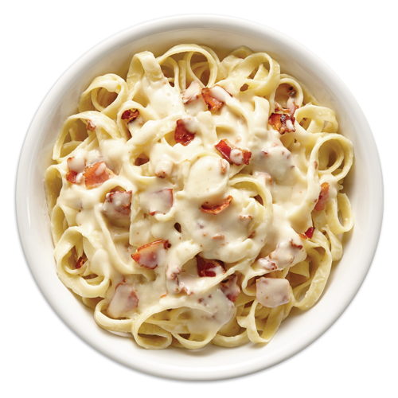

>
Pasta Carbonara

This dish is a deli egg-bacon-and-cheese-on-a-roll that has been pasta-fied, fancified, fetishized and turned into an Italian tradition that, like many inviolate Italian traditions, is actually far less old than the Mayflower. Because America may have contributed to its creation, carbonara is Exhibit A in the back-and-forth between Italy and the United States when it comes to food. Remember: the main goal is creaminess.
Easy Pasta Carbonara
Pasta carbonara is one of those simple dinners we should all know how to make. It’s the perfect go-to for a busy weeknight, and it’s also a dish fit for the weekend or even to serve to guests.
It seems like one of those dinners with so few ingredients that how could you possibly mess it up, but oh how you can if you aren’t using with the right method. I’m no expert on carbonara, which is why I turned to Cook’s Illustrated, they are the kitchen geniuses.
This recipe works so well because pasta is boiled in less water with to really concentrate the starches, which will help bind everything in the sauce and prevent separation when you add it to the egg mixture.
Another helpful tip is that the bacon is simmered in water first. Bacon seems easy to burn or can cook unevenly in a skillet, and pieces stick. But when going this route and cooking it in water first, it works like a charm.
And lastly this recipe contains the perfect ratio of eggs and yolks (or one yolk in this case) to have the perfect carbonara, custard-rich flavor and the perfect consistency.
Recipe originally lists Romano cheese, but I always have Parmesan on hand so I went with that to keep the simple weeknight meal idea here, but I’m sure Romano would also be delicious. Better yet, use half of each. Just be sure it’s freshly grated. Enjoy!
Ingredients
- Bacon
- Water
- Garlic
- Spaghetti
- Grated Parmesan
- Eggs
- Salt and pepper
- Fresh parsley
Steps
- Add bacon and water to a skillet and bring to a simmer.
- Continue simmering until water is evaporated, then continue to cook the bacon until crispy.
- Remove bacon from pan and reserve the drippings.
- Saute garlic in that same skillet until golden brown, then add to a bowl with 1 tablespoon bacon fat, eggs, egg yolk, Parmesan and pepper. Mix well.
- Meanwhile, cook the spaghetti or linguine pasta until al dente. Once cooked, drain pasta and reserve 1 cup of the cooking water.
- Slowly pour the hot cooking water into the egg mixture. Then pour over the hot pasta and toss to coat. Add crumbled bacon.
- Let pasta rest for a few minutes, tossing frequently until the carbonara sauce thickens. Serve immediately with a sprinkle of fresh parsley.